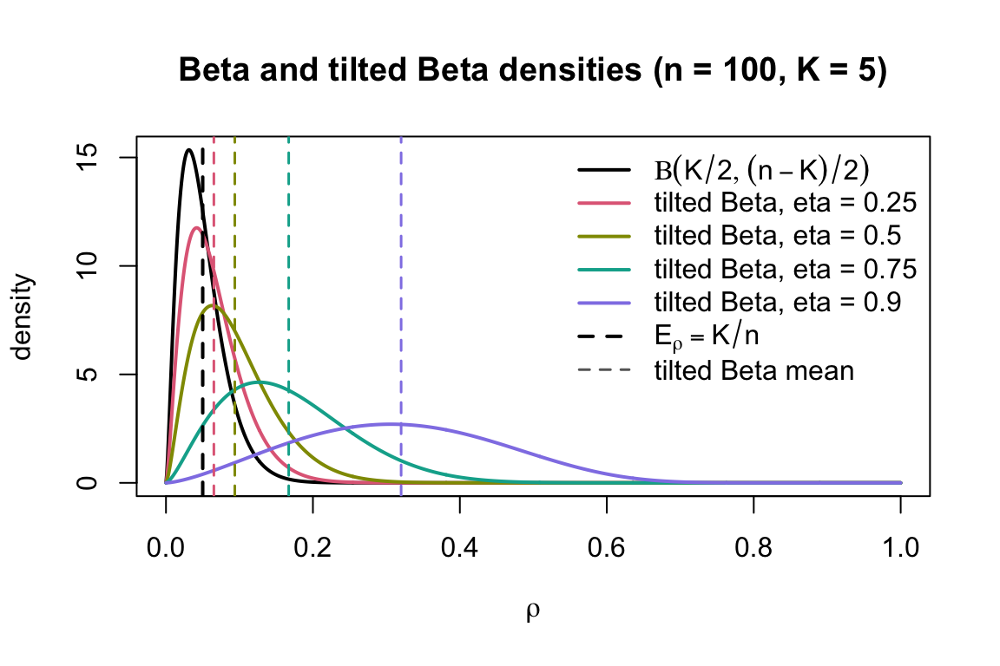

Last updated: 2026-07-07
Checks: 7 0
Knit directory: misc/
This reproducible R Markdown analysis was created with workflowr (version 1.7.2). The Checks tab describes the reproducibility checks that were applied when the results were created. The Past versions tab lists the development history.
Great! Since the R Markdown file has been committed to the Git repository, you know the exact version of the code that produced these results.
Great job! The global environment was empty. Objects defined in the global environment can affect the analysis in your R Markdown file in unknown ways. For reproduciblity it’s best to always run the code in an empty environment.
The command set.seed(20251108) was run prior to running
the code in the R Markdown file. Setting a seed ensures that any results
that rely on randomness, e.g. subsampling or permutations, are
reproducible.
Great job! Recording the operating system, R version, and package versions is critical for reproducibility.
Nice! There were no cached chunks for this analysis, so you can be confident that you successfully produced the results during this run.
Great job! Using relative paths to the files within your workflowr project makes it easier to run your code on other machines.
Great! You are using Git for version control. Tracking code development and connecting the code version to the results is critical for reproducibility.
The results in this page were generated with repository version 8ef89fa. See the Past versions tab to see a history of the changes made to the R Markdown and HTML files.
Note that you need to be careful to ensure that all relevant files for
the analysis have been committed to Git prior to generating the results
(you can use wflow_publish or
wflow_git_commit). workflowr only checks the R Markdown
file, but you know if there are other scripts or data files that it
depends on. Below is the status of the Git repository when the results
were generated:
Ignored files:
Ignored: .DS_Store
Ignored: .Rhistory
Ignored: .Rproj.user/
Ignored: .luarc.json
Ignored: _extensions/
Ignored: analysis/.DS_Store
Ignored: analysis/presentation.html
Untracked files:
Untracked: Rplots.pdf
Untracked: analysis/custom.css
Untracked: analysis/draft.Rmd
Untracked: analysis/eb_ica_backup.Rmd
Untracked: analysis/ebica_math.md
Untracked: analysis/ebproj_on_random_proj.Rmd
Untracked: analysis/flashier_whitened_and_tree_example_tese.Rmd
Untracked: analysis/generalized_rademacher.Rmd
Untracked: analysis/ica_vs_flash_r1_rad copy.Rmd
Untracked: analysis/ica_vs_flash_r1_rad.Rmd
Untracked: analysis/ica_vs_flash_r1_update_2.Rmd
Untracked: analysis/index_bacup.Rmd
Untracked: analysis/math-env-refs.html
Untracked: analysis/notes.Rmd
Untracked: analysis/preemble.tex
Untracked: analysis/presentation.qmd
Untracked: analysis/references.bib
Untracked: analysis/tree_example.Rmd
Untracked: code/references.bib
Unstaged changes:
Modified: .gitignore
Modified: analysis/_site.yml
Modified: analysis/eb_ica.Rmd
Modified: analysis/flashier_whitened_and_tree_example.Rmd
Modified: analysis/ica_vs_flash_r1_update_1.Rmd
Modified: analysis/ica_vs_flashier_r1_rad.Rmd
Modified: analysis/ica_with_noise.Rmd
Modified: analysis/on_flashier_and_whitened_data.Rmd
Modified: analysis/on_generalized_rademacher.Rmd
Modified: analysis/shifted_rademacher_for_ebproj.Rmd
Note that any generated files, e.g. HTML, png, CSS, etc., are not included in this status report because it is ok for generated content to have uncommitted changes.
These are the previous versions of the repository in which changes were
made to the R Markdown (analysis/ebproj.Rmd) and HTML
(docs/ebproj.html) files. If you’ve configured a remote Git
repository (see ?wflow_git_remote), click on the hyperlinks
in the table below to view the files as they were in that past version.
| File | Version | Author | Date | Message |
|---|---|---|---|---|
| Rmd | 8ef89fa | junmingguan | 2026-07-07 | wflow_publish("analysis/ebproj.Rmd") |
| html | b1d10ba | junmingguan | 2026-07-07 | Build site. |
| Rmd | cf0cfa1 | junmingguan | 2026-07-07 | wflow_publish("analysis/ebproj.Rmd") |
| html | f37ba62 | junmingguan | 2026-07-07 | Build site. |
| Rmd | dde1558 | junmingguan | 2026-07-07 | wflow_publish("analysis/ebproj.Rmd") |
| html | 7b93f1f | junmingguan | 2026-07-07 | Build site. |
| Rmd | 90dcd78 | junmingguan | 2026-07-07 | wflow_publish("analysis/ebproj.Rmd") |
| html | 31dd84b | junmingguan | 2026-07-07 | Build site. |
| Rmd | 446141d | junmingguan | 2026-07-07 | wflow_publish("analysis/ebproj.Rmd") |
| html | 5772926 | junmingguan | 2026-07-04 | Build site. |
| Rmd | a224caf | junmingguan | 2026-07-04 | wflow_publish("analysis/ebproj.Rmd") |
| html | 9814618 | junmingguan | 2026-07-04 | Build site. |
| Rmd | 755a858 | junmingguan | 2026-07-04 | wflow_publish(c("analysis/ebproj.Rmd", "analysis/index.Rmd")) |
| html | 683a79e | junmingguan | 2026-07-04 | Build site. |
| Rmd | 8eba0b8 | junmingguan | 2026-07-04 | wflow_publish(c("analysis/ebproj.Rmd", "analysis/index.Rmd")) |
\[ \newcommand{\E}{\mathbb{E}} \newcommand{\R}{\mathbb{R}} \newcommand{\P}{\mathbb{P}} \newcommand{\Rn}{\mathbb{R}^n} \DeclareMathOperator{\Var}{Var} \newcommand{\vbar}{\bar{v}} \newcommand{\EBproj}{\text{EB-proj}} \newcommand{\KL}[2]{\text{KL}\left(#1 \ \| \ #2\right)} \newcommand{\Unif}{\text{Unif}} \newcommand{\Rad}{\text{Rad}} \newcommand{\Eq}{\mathbb{E}_q} \newcommand{\Eqv}{\mathbb{E}_q[v]} \newcommand{\Eqvv}{\mathbb{E}_q\|v\|^2} \newcommand{\EqPv}{\mathbb{E}_q[v^\top P v]} \newcommand{\norm}[1]{\left\|#1\right\|} \DeclareMathOperator{\EBNM}{EBNM} \newcommand{\eff}{\text{eff}} \newcommand{\obs}{\text{obs}} \]
We have seen that the low-plus-noise assumed in flashier, when applied to centered and whitened data is generally not ideal. For example, if the data matrix is generated as
\[ Y=\ell f^\top + E, \quad E_{ij}\stackrel{\text{iid}}{\sim} N(0, \sigma^2),\quad \ell_i \stackrel{\text{iid}}{\sim} \Rad,\quad f_j\stackrel{iid}{\sim} N(0, \sigma_f^2), \]
then the whitened and centered data matrix has rather complex distribution for which the above model is misspecified and in general not compatible with the iid noise assumption. Furthermore, the prior after the whitening transformation could also change: for example, in the simple case where \(y=\ell\) and \(\ell_i\sim \Rad(p)\), centering and whitening changes the distribution to a normalized two point distribution such that shrinkage to a \(\{\pm 1\}\) distribution seems unsatisfactory. A different and perhaps more principled route is to model the whitened data, or the projection matrix, directly.
Here we propose EB-proj, “Empirical Bayes on projection”, to model a given a rank-\(K\) projection matrix \(P\) in a probabilistic fashion and seek to extra latent directions from it. As an example, consider the case where the subspace spanned by the \(P\) contains an “interesting” latent vector \(v\), \(P=vv^\top/\|v\|^2+V_0V_0^\top\), where \(V\) is a random projection matrix onto the rank-\(K-1\) subspace orthogonal to \(v\). In this case, the alignment of \(P\) with \(v\), defined as
\[ \rho_v(P)=\frac{v^\top Pv}{\|v\|^2}, \]
is exactly \(1\). Of course, it could also be the case that \(P=\sum u_ku_k^\top\) and \(v=\sum a_k u_k\). There are also situations where the alignment is not exact, in which case, \(\rho_v(P)<1\). This could arise when one considers a low-rank whitening of a data matrix and some signals are removed in the process. This suggests that to probabilistically model \(P\), we should also model the randomness in the alignment \(\rho_v(P)\); this is analogous to assuming random Gaussian noise in the low-rank-plus-noise model. As is evident from the previous discussion, given a latent vector \(v\) and an alignment index \(\rho\), the choice of \(P\) is not unique, leaving room for random modeling. We thus consider the probability measure on the ser of all rank-\(K\) projection matrices, given \(v\) and \(\rho\):
\[ p(P \mid v, \rho) = \frac{p(\rho \mid P, v) \,p(P \mid v)}{p(\rho \mid v)}. \]
Given \(P\) and \(v\), \(\rho\) is fixed, so \(p(\rho \mid R, v)=\delta(\rho-\rho_{\text{obs}})\), where \(\rho_{\text{obs}}=v^\top P v/\|v\|^2\). We assume that \(P\) is uniformly drawn from the Haar measure on the Grassmannian maniford. Hence \(p(P \mid v) \propto 1\) and
\[ \rho \mid v \sim \operatorname{Beta}(k/2, (n-k)/2). \]
Under this model,
\[ p(P \mid v, \rho) \propto \delta(\rho-\rho_{\text{obs}}) \rho^{k/2-1}(1-\rho)^{(n-k)/2-1}. \] Introducing a prior \(\pi(p)\sim \operatorname{Beta}(a,b)\), and letting \(a=k/2\), we have
\[ p(P \mid v) = \int^1_0 p(P \mid v, \rho) \pi(d\rho) \propto (1-\rho_{\text{obs}})^{b-(n-k)/2}. \] We thus have the following “rank-1” data generating process:
\[ \begin{equation} \begin{aligned} v & \sim g^{\otimes n} \\ \rho \mid v & \sim \operatorname{Beta}(k/2, b) \\ P \mid \rho, v & \sim \Unif\,(\{\mathcal{P}_{n,K}:\ \rho_{\text{obs}}=\rho\}). \end{aligned} \label{eq:dgp-eb-proj} \end{equation} \]
The marginal log likelihood is given by
\[ \log \int p(P\mid v) g(dv). \]
Consider a variational approach, the exact ElBO is
\[ F_{\EBproj}(q, g) = \Eq\left[-\frac{n-k-2b}{2}\log(1-\rho_{\text{obs}})\right] - \KL{q}{g} +C, \]
where \(C=\log\Gamma\left(\frac{n-k}{2}\right)+\log\Gamma\left(\frac{k}{2}+b\right)-\log\Gamma\left(\frac{n}{2}\right)-\log\Gamma(b)\). The expectation is in general not in closed form. A easy-to-evaluate surrogate is
\[ \widehat{F}_{\EBproj}(q, g) = -\frac{n-k-2b}{2}\log\left(1-\frac{\Eqv^\top P \Eqv}{\Eqvv}\right) - \KL{q}{g} +C, \]
and a more accurate one is
\[ \widetilde{F}_{\EBproj}(q, g) = -\frac{n-k-2b}{2}\log\left(1-\frac{\EqPv}{\Eqvv}\right) - \KL{q}{g} +C. \]
The following result follows from Jensen’s inequality.
\[ \widehat{F}_{\EBproj}(q, g) \le \widetilde{F}_{\EBproj}(q, g) \le F_{\EBproj}(q, g). \]
As a special case which we will investigate firther, consider the Rademacher prior \(g=\Rad(\tfrac12)\) on \(v\). We write the surrogate EB-proj objective as
\[ \widehat{F}(\vbar)\equiv \widehat{F}_{\EBproj}(q, \Rad(\tfrac12)) = \frac{n-2k-b}{2}\log \left(1-\frac{\vbar^\top P\vbar}{n}\right)-\sum_{i=1}^n h(\vbar_i)+C, \] where \(\vbar:=\Eqv\) and
\[ h(x)=\frac{1+x}{2}\log(1+x)+\frac{1-x}{2}\log(1-x). \]
When analyzing a framework involving an optimization problem, there are two important questions:
We first answer the question. In particular, if the observed projection matrix \(P\) does not contain any signal, i.e., \(P\sim \Unif(\mathcal{P}_{n, K})\), the uniform distribution on the set of all rank-\(K\) \(n\)-by-\(n\) projection matrices, is the null solution the optimum of the objective, at least locally?
The following results says that: under the null, the Rademacher EB-proj surrogate objective does not favor a solution that is far away from 0.
Suppose \(K\) and \(b\) are fixed as \(n\to\infty\), and \(P\sim\Unif(\mathcal P_{n,K})\). For every fixed \(\varepsilon>0\), there exists \(a_\varepsilon>0\) such that
\[ \P_{P\sim\Unif(\mathcal P_{n,K})}\left[ \sup_{m\in[-1,1]^n, \ \ \|m\|_2\ge \varepsilon\sqrt n} \widehat{F}(m) \le -a_\varepsilon n \right] \to 1. \]
However, this theorem does not rule out the near-zero (e.g., \(o(\sqrt{n})\)) solutions. In practice, we could either discard a solution with norm less than a prespecified threshold, as is done in flashier, or use the following result to reject it.
Suppose \(P\sim \Unif(\mathcal{P}_{n, K})\) and \(v\sim g^{\otimes n}\). Then
\[ \P_{P\sim\Unif(\mathcal{P}_{n, K})}\left[\sup_{q}\widehat{F}_{\EBproj}(q, g) \ge t\right] \le e^{-t}. \]
We attempt to derive a similar framework from the spiked model assumed in flashier:
\[ Y \in \R^{n\times K}=v z^\top + E, \quad E_{ij}\stackrel{\text{iid}}{\sim} N(0, \sigma^2),\quad v_i \stackrel{\text{iid}}{\sim} g,\quad z_j\stackrel{iid}{\sim} N(0, \sigma_z^2). \]
Integrating out \(z\), and denote \(\kappa=\sigma_z^2/\sigma^2\), we have
\[ y_j\mid v \sim N\left(0,\Sigma_v\right), \qquad \Sigma_v=\sigma^2 I_n+\sigma_z^2vv^\top =\sigma^2(I_n+\kappa vv^\top). \]
Consider the projection \(P=Y(Y^\top Y)^{-1}Y^\top\), the induced density of \(P\) on the Grassmannian has the form
\[ \begin{equation} \begin{aligned} p(P\mid v,\kappa)& = \frac{1}{Z_{n,K}} (1-\eta(v, \kappa))^{K/2} (1-\eta(v, \kappa)\, \frac{v^\top P v}{\|v\|^2})^{-n/2} \\ &= \frac{1}{Z_{n,K}} (1+\kappa \norm{v}^2)^{(n-K)/2} (1-\frac{\kappa v^\top P v}{1+\kappa \norm{v}^2})^{-n/2}, \qquad \eta(v, \kappa)=\frac{\kappa \norm{v}^2}{1+\kappa \norm{v}^2}. \end{aligned} \label{eq:spike-pdf} \end{equation} \]
Equivalently,
\[ \begin{aligned} \log p(P\mid v,\kappa) &= C+\frac K2\log(1-\eta(v, \kappa)) -\frac n2\log(1-\eta(v, \kappa)\rho) \\ &= C+\frac{n-K}{2}\log(1+\kappa \norm{v}^2) -\frac n2\log(1+\kappa \norm{v}^2-\kappa v^\top P v), \qquad \rho=\frac{v^\top P v}{\|v\|^2}. \end{aligned} \]
Take
\[ H:=Y(Y^\top Y)^{-1/2}\in \mathcal{V}_{K,n}, \]
where \(\mathcal{V}_{K,n}\) is the Stiefel manifold of \(n\)-by-\(K\) matrices with orthonormal columns. Then \(P=HH^\top\). Then \(H\) follows a matrix angular central Gaussian distribution (MACG) with parameter \(\Sigma_v\) @[Chikuse2003-gg]:
\[ H \mid v \sim \operatorname{MACG}(\Sigma_v), \]
The marginal log likelihood for a fixed \(\kappa\) is given by
\[ \log \int p(P\mid v,\kappa) g(dv). \]
Taking a variational approach gives the following variational objective:
\[ \widehat{F}_{\text{EB-spiked-proj}}(q,g,\kappa) = \frac K2\log(1-\eta(v, \kappa)) -\frac n2\log(1-\eta(v, \kappa)\hat\rho(q)) -\KL{q}{g}+C, \]
or
\[ \widehat{F}_{\text{EB-spiked-proj}}(q,g,\kappa) = \frac{n-K}{2}\log(1+\kappa \Eqvv) -\frac n2\log\left(1+\kappa (\Eqvv- \vbar^\top P \vbar)\right) -\KL{q}{g}+C, \]
In fact, let \(\rho_{\obs}=\frac{v^\top Pv}{\|v\|^2}\), then \(\eqref{eq:spike-pdf}\) can be written as the following form:
\[ \begin{aligned} p(P\mid v, \kappa) &= \int_0^1 \frac{\delta(\rho-\rho_{\obs})}{Z_{n,K}} \frac{\overbrace{\frac{1}{B(K/2,(n-K)/2)} \rho^{K/2-1} (1-\rho)^{(n-K)/2-1} (1-\eta(v, \kappa))^{K/2} (1-\eta(v, \kappa)\rho)^{-n/2}}^{\widetilde{\pi}_v(\rho)}}{\frac{1}{B(K/2,(n-K)/2)} \rho^{K/2-1} (1-\rho)^{(n-K)/2-1}} d\rho \\ &= \int_0^1 \frac{p(\rho \mid P, v) p(P\mid v)}{p(\rho \mid v)}\widetilde{\pi}_{v,\kappa}(d\rho). \end{aligned} \]
where \[ \widetilde{\pi}_{v,\kappa}(\rho)=\frac{1}{B(K/2,(n-K)/2)} \rho^{K/2-1} (1-\rho)^{(n-K)/2-1} (1-\eta(v, \kappa))^{K/2} (1-\eta(v, \kappa)\rho)^{-n/2}, \qquad \eta(v, \kappa)=\frac{\kappa \norm{v}^2}{1+\kappa \norm{v}^2}, \]
is a Beta-like prior on \(\rho\), tilted by alignment with \(v\).

| Version | Author | Date |
|---|---|---|
| 31dd84b | junmingguan | 2026-07-07 |
Hence, we can write the DGP as
\[ \begin{equation} \begin{aligned} v & \sim g^{\otimes n} \\ \rho \mid v & \sim \widetilde{\pi}_{v,\kappa} \\ P \mid \rho, v & \sim \Unif\,(\{\mathcal{P}_{n,K}:\ \rho_{\text{obs}}=\rho\}). \end{aligned} \label{eq:dgp-eb-spiked-proj} \end{equation} \]
\(\eqref{eq:dgp-eb-spiked-proj}\) is exact if we retain the full column space of \(Y\), and \(n > K\). But we could probably use this model for any rank-\(K\) projection matrix \(P\).
Interestingly, when \(\kappa\to\infty\), we have \(\eta(v, \kappa)\to 1\) and the objective reduces to
\[ \widehat{F}_{\text{EB-spiked-proj}}(q,g,\infty) = -\frac n2\log(1-\hat\rho(q)) -\KL{q}{g}+C, \]
which is very similar to the EB-proj objective. This suggests that the EB-proj objective is a limiting case of the spiked model when the signal-to-noise ratio is large.
We can also see the connection by profiling over \(\kappa\). Taking derivative and setting it to 0 gives
\[ \kappa = \frac{(n\hat{\rho}-K)_+}{K(1-\hat{\rho})\Eqvv}. \]
Plugging this back into the objective gives
\[ \begin{aligned} \widehat{F}^{\operatorname{prof}}_{\text{EB-spiked-proj}}(q,g) &= \begin{cases} -\KL{q}{g}+C, & \hat\rho(q)\le K/n,\\[6pt] \frac{n-K}{2}\log\left(\frac{(n-K)\hat\rho(q)} {K(1-\hat\rho(q))}\right) -\frac n2\log\left(\frac{n\hat\rho(q)}{K}\right) -\KL{q}{g}+C, & \hat\rho(q)>K/n, \end{cases} \\ &=\begin{cases} -\KL{q}{g}+C, & \hat\rho(q)\le K/n,\\[6pt] -\frac{n-K}{2}\log(1-\hat\rho(q)) -\frac{K}{2}\log\hat\rho(q) -\KL{q}{g}+C', & \hat\rho(q)>K/n. \end{cases} \end{aligned} \]
Consider the convex conjugate of log: \(-\log x = \max_{\tau > 0} \{\log \tau - \tau x + 1\}\), we have
\[ \log(1-\eta(v, \kappa)\hat\rho(q)) = \max_{\tau>0} \{\log \tau - \tau(1-\eta(v, \kappa)\hat\rho(q)) + 1\}. \]
So the surrogate objective can be written as
\[ \widehat{F}^\tau_{\text{EB-spiked-proj}}(q,g,\kappa) = C_\tau + \frac K2\log(1-\eta(v, \kappa)) +\frac {\tau n}{2} \eta(v, \kappa)\hat\rho(q) - \KL{q}{g}, \]
which looks like the flashier objective with Normal prior on \(z\), profiled over \(z\) (eq. 54-55 in EBMF_cov_ideas):
\[ \widehat{F}^z_{\text{flashier}} = \frac{\alpha n\hat{\rho}(q)}{2\sigma^2} + \frac{K}{2}\log(1-\alpha) - \KL{q}{g} + C'', \]
where \(\alpha = \eta(v,\kappa)= \frac{\kappa \Eqvv}{1+\kappa \Eqvv}\). So for fixed \(\kappa\) (hence fixed \(\alpha\) and \(\eta(\vbar, \kappa)\equiv \eta(\vbar)\)), the update for \(q\) is given by (Table 1 in EBMF_cov_ideas):
\[ \EBNM\left(\frac{nP \vbar}{\eta(\vbar)n\hat{\rho}(q)+K \sigma^2_{\eff}}, \frac{\sigma^2_{\eff} \Eqvv}{\eta(\vbar)(\eta(\vbar)n\hat{\rho}(q)+K \sigma^2_{\eff})}\right), \]
where
\[ \sigma^2_{\eff} = \frac{1}{\tau}. \]
The update for \(\kappa\) is given by
\[ \hat\kappa_{\tau}= \frac{(n\tau\hat\rho-K)_+}{K\Eqvv}. \]
Hence, the update for \(\alpha=\eta\) is given by
\[ \hat\eta_\tau=\left( 1-\frac{K}{N\tau\hat\rho} \right)_+, \]
which matches the MLE update for \(\alpha\) in Table 1 in EBMF_cov_ideas.
The update for \(\tau\) is given by
\[ \hat\tau =\frac{1}{1-\hat\eta\hat\rho(q)}. \]
sessionInfo()R version 4.3.1 (2023-06-16)
Platform: aarch64-apple-darwin20 (64-bit)
Running under: macOS 26.5.2
Matrix products: default
BLAS: /Library/Frameworks/R.framework/Versions/4.3-arm64/Resources/lib/libRblas.0.dylib
LAPACK: /Library/Frameworks/R.framework/Versions/4.3-arm64/Resources/lib/libRlapack.dylib; LAPACK version 3.11.0
locale:
[1] en_US.UTF-8/en_US.UTF-8/en_US.UTF-8/C/en_US.UTF-8/en_US.UTF-8
time zone: America/Chicago
tzcode source: internal
attached base packages:
[1] stats graphics grDevices utils datasets methods base
other attached packages:
[1] workflowr_1.7.2
loaded via a namespace (and not attached):
[1] vctrs_0.6.5 httr_1.4.8 cli_3.6.5 knitr_1.51
[5] rlang_1.1.6 xfun_0.57 stringi_1.8.7 otel_0.2.0
[9] processx_3.8.7 promises_1.5.0 jsonlite_2.0.0 glue_1.8.0
[13] rprojroot_2.1.1 git2r_0.36.2 htmltools_0.5.9 httpuv_1.6.17
[17] sass_0.4.10 rmarkdown_2.31 jquerylib_0.1.4 tibble_3.3.1
[21] evaluate_1.0.5 fastmap_1.2.0 yaml_2.3.12 lifecycle_1.0.5
[25] whisker_0.4.1 stringr_1.6.0 compiler_4.3.1 fs_1.6.6
[29] pkgconfig_2.0.3 Rcpp_1.1.0 rstudioapi_0.18.0 later_1.4.8
[33] digest_0.6.37 R6_2.6.1 pillar_1.11.1 callr_3.7.6
[37] magrittr_2.0.5 bslib_0.10.0 tools_4.3.1 cachem_1.1.0
[41] getPass_0.2-4